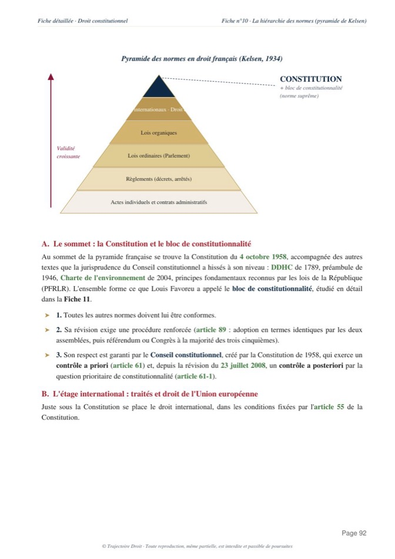

La révision de la Constitution
La révision de la Constitution suit la procédure fixée par son article 89. Un projet ou une proposition doit d'abord être voté dans les mêmes termes par l'Assemblée nationale et le Sénat. Le texte est ensuite approuvé soit par référendum, soit par le Congrès à la majorité des trois cinquièmes. Deux limites s'imposent en toute hypothèse, l'intégrité du territoire et la forme républicaine du gouvernement, qu'aucune révision ne peut jamais toucher.

L'essentiel en une phrase
Une constitution n'est jamais écrite pour rester figée. Celle du 4 octobre 1958 prévoit elle-même, dans son article 89, la façon dont elle peut être modifiée. On appelle ce pouvoir de modification le pouvoir constituant dérivé, pour le distinguer du pouvoir constituant originaire, celui qui a écrit la Constitution en partant de zéro en 1958. Cette distinction vient de l'abbé Sieyès, et elle explique pourquoi la révision suit des règles différentes de celles d'une loi ordinaire. La Constitution française est d'ailleurs une constitution rigide, plus difficile à modifier qu'une loi, alors qu'une constitution souple se réviserait comme n'importe quel texte voté par le Parlement.
Article 89, alinéa 1er, de la Constitution
« L'initiative de la révision de la Constitution appartient concurremment au Président de la République sur proposition du Premier ministre et aux membres du Parlement. »Constitution du 4 octobre 1958, article 89
Fixe d'abord ce schéma en trois temps, tu en as besoin pour tout le reste de l'article. Un texte de révision doit d'abord être voté dans les mêmes termes par l'Assemblée nationale et le Sénat. Il doit ensuite être approuvé, soit par le peuple lors d'un référendum, soit par les parlementaires réunis à Versailles en Congrès. Deux limites s'ajoutent enfin à ce schéma, et elles ne souffrent aucune exception, quel que soit le chemin choisi.
Qui a l'initiative de la révision
Deux personnes différentes peuvent lancer une révision de la Constitution, et ta copie doit nommer la bonne dès le départ, parce que la suite de la procédure en dépend directement.
Quand le Président de la République prend l'initiative, sur proposition du Premier ministre, le texte s'appelle un projet de révision. Quand l'initiative vient d'un député ou d'un sénateur, le texte s'appelle au contraire une proposition de révision. Cette différence de vocabulaire n'a rien d'anecdotique, tu verras plus loin qu'elle commande le choix entre référendum et Congrès. Dans les deux cas, le gouvernement ou le parlementaire qui dépose le texte reste libre du contenu de la révision. En effet, l'article 89 ne limite en rien les sujets qui peuvent être révisés, en dehors des deux exceptions posées plus bas.
Le vote des deux chambres en termes identiques
Une fois déposé, le texte doit franchir une étape commune au projet comme à la proposition, avant même d'envisager son approbation finale.
Article 89, alinéa 2, de la Constitution
« Le projet ou la proposition de révision doit être examiné dans les conditions de délai fixées au troisième alinéa de l'article 42 et voté par les deux assemblées en termes identiques. La révision est définitive après avoir été approuvée par référendum. »Constitution du 4 octobre 1958, article 89
Retiens surtout l'expression « en termes identiques », tu la retrouveras souvent dans les sujets d'examen. L'Assemblée nationale et le Sénat doivent voter exactement le même texte, mot pour mot, sans qu'aucune des deux chambres ne puisse imposer sa version à l'autre. Un désaccord entre elles bloque donc la révision, à la différence d'une loi ordinaire, où l'Assemblée nationale peut avoir le dernier mot face à un Sénat récalcitrant. C'est une garantie importante, car le Sénat pèse autant que l'Assemblée nationale dès qu'il s'agit de toucher à la Constitution. Il reste pourtant souvent en position de faiblesse sur les lois ordinaires.
Ce vote conforme des deux chambres reste toutefois une étape intermédiaire. Il fixe le texte définitif de la révision, mais il ne suffit pas à lui seul à la rendre applicable. Une dernière approbation reste nécessaire, et elle seule sépare les deux issues possibles de la procédure, le Congrès ou le référendum.
Congrès ou référendum, les deux issues possibles
L'alinéa 2 que tu viens de lire pose un principe simple. Une révision devient définitive une fois approuvée par référendum. C'est la voie normale, celle qui s'impose par défaut. L'alinéa suivant y ajoute pourtant une exception de taille.
Article 89, alinéa 3, de la Constitution
« Toutefois, le projet de révision n'est pas présenté au référendum lorsque le Président de la République décide de le soumettre au Parlement convoqué en Congrès ; dans ce cas, le projet de révision n'est approuvé que s'il réunit la majorité des trois cinquièmes des suffrages exprimés. Le bureau du Congrès est celui de l'Assemblée nationale. »Constitution du 4 octobre 1958, article 89
Lis attentivement le premier mot de cet alinéa, « projet ». Ce mot n'est pas choisi au hasard. C'est ici que la distinction de la première section prend tout son sens. En effet, seul un projet de révision, d'origine présidentielle, peut emprunter la voie du Congrès. Une proposition de révision, d'origine parlementaire, doit toujours suivre la voie du référendum. Cette règle réserve ainsi un pouvoir important au seul chef de l'État, celui d'éviter de consulter directement les électeurs sur une réforme constitutionnelle.
Quand le Président choisit le Congrès, les 577 députés et les 348 sénateurs se réunissent ensemble au château de Versailles, sous la présidence du bureau de l'Assemblée nationale. Note bien, d'ailleurs, le chiffre exact pour ta copie, le texte doit y réunir la majorité des trois cinquièmes des suffrages exprimés, une majorité calculée sur les seules voix exprimées au moment du vote. Une confusion fréquente remplace en effet à tort ce seuil par une majorité des deux tiers, ou par un calcul sur l'ensemble des membres du Congrès, deux erreurs qui coûtent des points en cas pratique. La voie du Congrès reste malgré tout plus rapide et plus discrète que le référendum, car elle évite une campagne nationale et le risque d'un vote populaire hostile.
Les deux limites que la Constitution s'impose à elle-même
Le pouvoir de réviser la Constitution n'est pas total, même une fois la procédure des alinéas précédents parfaitement respectée. L'article 89 pose deux bornes, une limite de circonstance et une limite de fond.
Article 89, alinéas 4 et 5, de la Constitution
« Aucune procédure de révision ne peut être engagée ou poursuivie lorsqu'il est porté atteinte à l'intégrité du territoire. La forme républicaine du Gouvernement ne peut faire l'objet d'une révision. »Constitution du 4 octobre 1958, article 89
La première limite tient à une circonstance précise, une atteinte à l'intégrité du territoire, par exemple une invasion ou une occupation d'une partie du pays. Le constituant a voulu empêcher qu'une révision profite d'une situation de faiblesse nationale pour changer les institutions sous la pression de l'ennemi, un scénario directement inspiré des lois constitutionnelles de 1940 qui avaient donné les pleins pouvoirs au maréchal Pétain après la défaite.
La seconde limite touche, elle, au fond même du régime. En effet, la forme républicaine du gouvernement ne peut jamais être révisée, ce qui interdit tout retour à une monarchie, même par un vote unanime des deux chambres réunies en Congrès. Un exemple précis aide à fixer cette règle pour ta copie, l'article 6 fixe aujourd'hui l'élection du Président au suffrage universel direct pour cinq ans. Le Parlement pourrait donc en théorie modifier ce mode d'élection ou la durée du mandat par une révision ordinaire. Il ne pourrait en revanche jamais transformer la fonction présidentielle en une couronne héréditaire. Ce choix toucherait la forme républicaine elle-même.
1962, quand de Gaulle a contourné l'article 89
La procédure que tu viens de lire n'a pas toujours été suivie à la lettre, et l'épisode le plus commenté de toute l'histoire constitutionnelle de la Ve République le montre bien.
Au début des années 1960, le général de Gaulle veut faire élire le Président de la République au suffrage universel direct, alors qu'il est encore élu par un collège de grands électeurs. Ce changement touche à l'article 6, donc à une matière constitutionnelle. La procédure normale de l'article 89 devrait donc s'appliquer. Le Sénat, présidé par Gaston Monnerville, s'oppose fermement à cette réforme et pourrait bloquer le vote conforme exigé par l'alinéa 2. De Gaulle choisit alors de contourner cet obstacle, en soumettant directement le texte au référendum sur le fondement de l'article 11 de la Constitution, qui permet au Président de consulter le peuple sans vote parlementaire préalable, mais qui n'est en principe pas prévu pour réviser la Constitution elle-même. Monnerville dénonce ce choix comme une « forfaiture », un mot fort qui désigne la trahison des devoirs attachés à sa charge.
La crise politique monte vite. Le 5 octobre 1962, l'Assemblée nationale vote une motion de censure contre le gouvernement de Georges Pompidou, la première des deux seules motions de censure jamais adoptées sous toute la Ve République. En effet, Pompidou démissionne aussitôt, et de Gaulle dissout l'Assemblée le 9 octobre. Le référendum a lieu malgré tout le 28 octobre 1962, et le « oui » l'emporte ainsi avec 62,25 % des suffrages exprimés.
Le président du Sénat saisit ensuite le Conseil constitutionnel pour faire contrôler la loi issue de ce référendum, mais celui-ci se déclare incompétent dans sa décision du 6 novembre 1962, au motif qu'une loi adoptée par le peuple à la suite d'un référendum constitue l'expression directe de la souveraineté nationale. J'ai consacré une page entière au raisonnement précis de cette décision, avec le considérant complet et la critique doctrinale qu'elle continue de soulever, sur ma fiche dédiée à la décision Loi référendaire de 1962. L'essentiel pour ta copie sur la révision tient en une phrase. Cet épisode reste, aujourd'hui encore, le seul exemple d'une révision constitutionnelle passée par l'article 11 plutôt que par l'article 89.

Fiche complète
Droit constitutionnel L1
La voie du Congrès en pratique
L'exemple de 1962 ne doit pas te faire croire que la procédure normale de l'article 89 reste théorique. Tu la retrouveras au contraire à l'œuvre dans de nombreuses révisions, et la voie du Congrès en particulier est devenue la méthode la plus courante pour réviser la Constitution.
La révision du 25 juin 1992 en donne un bon exemple. Le traité de Maastricht, qui crée l'Union européenne, contenait des dispositions contraires à la Constitution française, notamment sur la monnaie unique et le droit de vote des citoyens européens aux élections municipales. Le Conseil constitutionnel l'a constaté dans sa décision du 9 avril 1992, et la Constitution a donc dû être révisée avant que la France ne puisse ratifier ce traité. Le Parlement, réuni en Congrès, a adopté cette révision sans difficulté majeure, ce qui a ouvert la voie à la ratification du traité lui-même par référendum quelques mois plus tard.
D'autres révisions importantes ont suivi le même chemin, sans jamais provoquer la crise politique de 1962. La révision du 23 juillet 2003 a ainsi inscrit l'organisation décentralisée de la République à l'article 1er, et celle du 1er mars 2005 a intégré la Charte de l'environnement au bloc de constitutionnalité. La voie référendaire, elle non plus, n'a pas toujours été source de crise. La révision du 2 octobre 2000, qui a réduit le mandat présidentiel de sept à cinq ans, a ainsi été approuvée par référendum le 24 septembre 2000, avec 73 % de « oui », mais avec une abstention record qui a nettement affaibli la portée politique de ce résultat. À l'inverse, le référendum reste aussi le terrain d'un échec retentissant, celui du 27 avril 1969, où de Gaulle avait engagé sa propre démission sur un projet de régionalisation et de réforme du Sénat. Le « non » l'a emporté avec 52,4 % des suffrages, et de Gaulle a quitté le pouvoir dès le lendemain.
2008, la révision la plus large de la Ve République
Une révision se limite rarement à un seul article, mais celle du 23 juillet 2008 reste, de loin, la plus ambitieuse de toute l'histoire de la Ve République. Adoptée au Congrès le 21 juillet 2008, elle modifie ou crée pas moins de 47 des 89 articles de la Constitution.
Retiens en priorité, pour ta copie, son apport le plus utilisé aujourd'hui, la création de la question prioritaire de constitutionnalité, inscrite au nouvel article 61-1 et entrée en vigueur le 1er mars 2010. Elle permet, en effet et pour la première fois dans l'histoire française, à tout justiciable de contester devant le juge une loi déjà en vigueur au nom des droits et libertés que la Constitution garantit. J'ai d'ailleurs détaillé son fonctionnement complet, avec le double filtre et le délai de trois mois du Conseil constitutionnel, sur ma page consacrée à la question prioritaire de constitutionnalité.
Cette révision touche aussi, dans le même mouvement, plusieurs autres piliers des institutions. L'article 6 limite désormais le Président de la République à deux mandats consécutifs, ce qui empêche un maintien indéfini au pouvoir. De plus, l'article 16 encadre pour la première fois les pouvoirs exceptionnels du Président en cas de crise grave, avec un contrôle du Conseil constitutionnel possible après trente jours d'exercice, puis de plein droit après soixante jours. Le Parlement gagne aussi du terrain. Il partage désormais l'ordre du jour avec le gouvernement à l'article 48, et dispose d'une nouvelle procédure de résolutions à l'article 34-1. Le recours à l'article 49, alinéa 3, est en outre encadré, réservé aux textes financiers et à un seul autre texte par session. Un Défenseur des droits apparaît enfin à l'article 71-1, chargé de veiller au respect des droits et libertés par les administrations.
Peut-on tout réviser
La question a longtemps agité la doctrine constitutionnelle, bien avant même la Ve République. Si les alinéas 4 et 5 de l'article 89 posent deux limites claires, rien dans le texte n'interdit explicitement au pouvoir constituant dérivé de commencer par supprimer ces deux limites elles-mêmes, avant de réviser ensuite ce qu'elles protégeaient. C'est la théorie dite de la « double révision », déjà débattue sous la IIIe République à propos d'une loi comparable de 1884.
Le Conseil constitutionnel a pris position sur un point voisin, celui de son propre pouvoir de contrôle sur une révision déjà adoptée. En effet, dans sa décision du 26 mars 2003 sur la décentralisation, il juge qu'il ne tient ni de l'article 61, ni de l'article 89, ni d'aucune autre disposition de la Constitution le pouvoir de statuer sur une révision constitutionnelle. Il reprend ainsi, cette fois pour une révision votée par le Congrès, le même refus de contrôle déjà posé en 1962 pour une révision par référendum puis confirmé pour le traité de Maastricht en 1992. Une partie de la doctrine, avec le constitutionnaliste Georges Vedel, y voit une conséquence logique de la souveraineté du pouvoir constituant. Une autre partie, plus minoritaire, avec Louis Favoreu, aurait souhaité un contrôle au moins sur les deux limites intangibles de l'article 89, faute de quoi elles resteraient, selon cette lecture, sans véritable garantie juridictionnelle. Garde ce débat en tête pour une dissertation. Tu peux t'en servir pour interroger la portée réelle des limites que tu as lues plus haut.
L'utiliser dans une copie
Dans une dissertation. Un sujet du type « la révision de la Constitution est-elle encadrée » se construit naturellement autour de la tension entre l'encadrement écrit de l'article 89, l'initiative, le vote conforme, le choix entre Congrès et référendum, les deux limites intangibles, et la pratique de 1962, qui montre qu'un président déterminé peut s'en affranchir sans qu'aucun juge ne vienne le sanctionner. Interroge aussi la portée réelle des deux limites de l'article 89, puisque rien n'empêche en théorie une double révision qui les supprimerait avant de les contourner. Pour la méthode complète du raisonnement, revois donc ma page sur la méthode de la dissertation juridique.
Dans un cas pratique ou un commentaire. Commence toujours par identifier qui a pris l'initiative du texte, un projet d'origine présidentielle ou une proposition d'origine parlementaire, puisque cette qualification commande à elle seule le choix possible entre Congrès et référendum. Vérifie ensuite si l'une des deux limites de l'article 89 est en cause, une atteinte à l'intégrité du territoire ou un changement de la forme républicaine du gouvernement. Termine en resituant l'exemple donné dans l'énoncé par rapport aux précédents que tu connais, 1962 pour le contournement par l'article 11, 1992 ou 2008 pour la voie du Congrès en pratique.
Les erreurs qui coûtent des points
- Tu confonds la majorité des trois cinquièmes avec celle des deux tiers. L'article 89, alinéa 3, exige la majorité des trois cinquièmes des suffrages exprimés au Congrès. Le seuil des deux tiers, souvent invoqué à tort, ne s'applique à aucune étape de cette procédure.
- Tu crois que le Président peut toujours choisir la voie du Congrès. Cette voie n'est ouverte que pour un projet de révision, d'origine présidentielle. Une proposition d'origine parlementaire doit obligatoirement passer par le référendum.
- Tu présentes la décision de 1962 comme une validation du contournement de l'article 89. Le Conseil constitutionnel s'est déclaré incompétent. Il n'a jamais dit que le procédé de l'article 11 était régulier au regard de l'article 89.
- Tu réduis la révision de 2008 à la seule création de la QPC. Cette révision modifie 47 articles, la limitation des mandats présidentiels, l'encadrement de l'article 16 et le renforcement des pouvoirs du Parlement en font tout autant partie.
- Tu oublies la distinction entre les deux limites de l'article 89. L'atteinte à l'intégrité du territoire est une limite de circonstance, temporaire par nature. L'interdiction de réviser la forme républicaine, elle, ne disparaît jamais. Elle touche au fond même du régime.
Questions fréquentes
Qui peut proposer une révision de la Constitution ?
Quelle est la majorité requise au Congrès pour réviser la Constitution ?
Quelles sont les limites à la révision de la Constitution ?
Pourquoi la révision de 1962 est-elle controversée ?
Quelle est la différence entre un projet et une proposition de révision ?

La Constitution, au-delà de la seule procédure de révision.
Ma fiche de droit constitutionnel L1 reprend chaque institution de la Ve République et chaque grande décision, du bloc de constitutionnalité à la QPC, expliquées simplement et prêtes à servir en dissertation comme en cas pratique.
Voir la fiche de droit constitutionnel L1Où se range la révision de la Constitution dans le programme
Cette notion relève de la théorie de la Constitution, au programme du premier semestre de L1. Voici les pages à consulter si tu veux aller plus loin.
- La décision Loi référendaire de 1962, le raisonnement complet du Conseil constitutionnel sur le contournement de l'article 89
- La question prioritaire de constitutionnalité, le principal apport de la révision de 2008
- La séparation des pouvoirs, les régimes parlementaire et présidentiel
- Toutes mes fiches complètes, par matière et par semestre